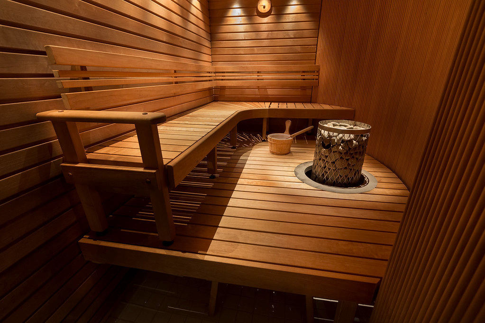

Qué está pasando realmente
Finlandia tiene, según distintas estimaciones, más saunas que automóviles. En un país de apenas 5,5 millones de habitantes, se calcula que existen más de tres millones de saunas repartidas entre casas particulares, edificios de apartamentos, oficinas, el parlamento nacional y hasta cabinas dentro de barcos y aviones. Con esa cifra, cualquiera pensaría que encontrar un hueco para sudar tranquilo nunca es un problema. Y sin embargo, en las saunas públicas más populares de Helsinki, es completamente normal ver a un grupo de finlandeses esperando su turno en silencio, sin prisa, sin quejarse, como si aguardar fuera parte del ritual tanto como el propio calor.
Para entender esa paciencia hay que entender primero qué es realmente una sauna para un finlandés: no es un lujo de spa ni un capricho turístico, es un espacio casi sagrado de desconexión física y social. Durante siglos, la sauna fue el lugar más limpio e higiénico de la casa rural finlandesa —de hecho, muchas mujeres daban a luz allí porque era el ambiente más esterilizado disponible— y también el espacio donde se resolvían conflictos familiares, se negociaban acuerdos y se marcaban los grandes momentos de la vida: nacimientos, bodas, incluso preparativos antes de un funeral.
Ese peso histórico explica por qué la sauna finlandesa sigue funcionando como un gran nivelador social. Dentro de ella, jefes y empleados, políticos y ciudadanos comunes se sientan desnudos o en toalla, en igualdad de condiciones, sin jerarquías visibles. Existe incluso una tradición diplomática real: durante décadas, muchas negociaciones políticas y empresariales finlandesas de alto nivel se han cerrado —o al menos suavizado— dentro de una sauna, en un ambiente donde la formalidad se disuelve literalmente con el sudor. El parlamento finlandés tiene su propia sauna oficial para recibir a delegaciones extranjeras, precisamente por ese valor simbólico.
En Finlandia se dice que las decisiones importantes de un país se han tomado, literalmente, sudando en una sauna.
De dónde viene todo esto
Hacer cola para entrar, entonces, no se vive como una molestia burocrática sino como parte del respeto colectivo hacia un espacio que todos valoran igual. Interrumpir el turno de alguien, hablar demasiado alto mientras se espera o intentar colarse rompería un código no escrito que los finlandeses llevan generaciones cultivando: la sauna es un tiempo compartido, y ese tiempo compartido merece organizarse con el mismo cuidado silencioso con el que se vive adentro. El Sisu, esa palabra finlandesa casi intraducible que mezcla resiliencia, calma y determinación estoica, se aplica tanto al calor extremo de la sauna como a la espera tranquila en la puerta.
Lo interesante es que la sauna finlandesa tiene sus propias reglas no escritas, transmitidas más por observación que por explicación directa a los visitantes extranjeros. El silencio se valora por encima de la conversación; el ritmo lo marca quien vierte agua sobre las piedras calientes (löyly, la palabra finlandesa para el vapor que produce ese gesto, considerada casi intraducible por lo que representa); y salir a refrescarse en un lago helado o revolcarse en la nieve entre sesiones no es una excentricidad, sino la otra mitad literal del ritual, el contraste térmico que muchos finlandeses consideran indispensable.
Más allá de lo básico
Este amor colectivo por la sauna trascendió fronteras cuando, en 2020, la UNESCO incluyó la cultura de la sauna finlandesa en su lista de Patrimonio Cultural Inmaterial de la Humanidad, reconociendo formalmente lo que los finlandeses ya sabían: que no se trata solo de calor y vapor, sino de una infraestructura social entera construida alrededor de un ritual compartido. Incluso durante la pandemia, cuando las saunas públicas cerraron temporalmente, muchas encuestas mostraron que los finlandeses la extrañaban casi como se extraña a una persona cercana.
Parte del ritual que muchos visitantes pasan por alto es el vihta (o vasta, según la región): un manojo de ramas frescas de abedul que se golpea suavemente contra la piel durante la parte más calurosa de la sesión de sauna. Lejos de ser un castigo, los finlandeses describen ese ligero escozor como revitalizante: se dice que mejora la circulación y deja un aroma tenue y característico a abedul que impregna las saunas finlandesas entre junio y agosto, cuando se cosechan las ramas y se usan frescas o congeladas para el resto del año.
La diplomacia de la sauna tampoco es solo una anécdota antigua. Presidentes y primeros ministros finlandeses han recibido a homólogos extranjeros en saunas construidas específicamente para visitas de Estado, y las saunas de las embajadas finlandesas en el extranjero —incluida una en Washington D.C.— se usan con regularidad para recibir invitados en un ambiente considerado más relajado y sincero que cualquier sala de reuniones. La idea es simple: es más difícil mantenerse a la defensiva, diplomáticamente hablando, cuando todos están sudando envueltos en una toalla.

Qué debes saber si viajas
Una guía rápida antes de tu primera sauna finlandesa:
- La desnudez es lo habitual en las saunas finlandesas tradicionales — el bañador suele verse como poco higiénico, aunque las saunas públicas mixtas normalmente sí lo exigen.
- Lleva tu propia toalla para sentarte encima; se considera una norma básica de higiene.
- No hables de negocios ni cotillees en voz alta, ni siquiera entre amigos.
- Si te invitan a una sauna privada, es una señal genuina de confianza: trata la invitación en consecuencia.
- Las saunas públicas suelen tener sesiones o días separados para hombres y mujeres: consulta el horario antes de asumir que es mixta.
- Incluso en invierno, saltar a un lago congelado a través de un agujero cortado en el hielo (avanto) después de la sauna es una tradición local genuina, aunque extrema, que vale la pena probar una vez.
El panorama completo
Así que la próxima vez que alguien mencione que en Finlandia la gente hace cola pacientemente para sudar en una habitación de madera a noventa grados, vale la pena recordar que esa fila no es sobre el calor: es sobre un pueblo entero que decidió, hace siglos, que compartir el silencio y la incomodidad física con extraños y conocidos por igual era una forma legítima —quizás la más honesta— de construir comunidad.
¿Tienes curiosidad por saber cómo culturas cercanas manejan reglas parecidas? No te pierdas nuestros artículos sobre La pausa del café que en Suecia es casi obligatoria en el trabajo y Los bebés que duermen a la intemperie mientras sus padres toman café.